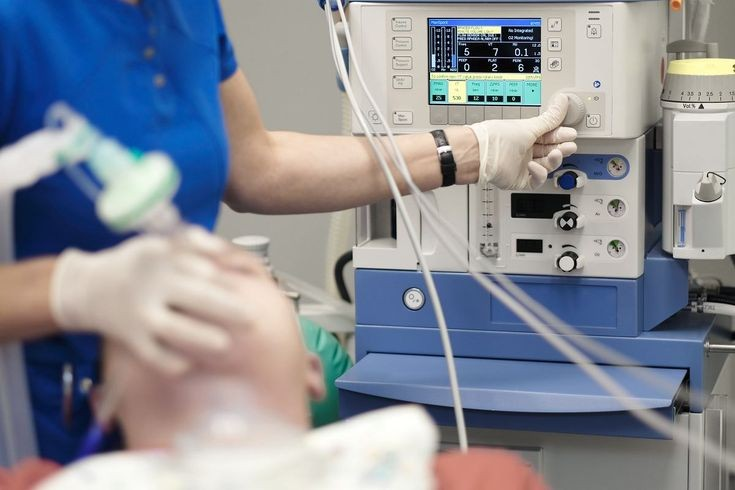

ونتیلاتور
دستگاه ونتیلاتور
(تهویه مکانیکی یا تهویه مصنوعی) را می توان دستگاه تنفسی نامید که برای بیمارانی که مشکلات تنفسی موقت
یا دائمی دارند
و نمی توانند به تنهایی نفس بکشند، تنفس می دهد.
تنفس با کمک یک سیستم عضلانی انجام می شود که حجم قفسه سینه را تغییر می دهد
و سپس فشار منفی و مثبت ایجاد می کند.
به عبارت دیگر فشاری ایجاد می کند که هوا را به داخل و خارج از
ریه ها حرکت می دهد. مهمترین عضله درگیر در تنفس عضله دیافراگم است. قفسه سینه با حرکات عضلات بین دنده
ای زیر دیافراگم و دم منبسط می شود،
یعنی انقباض و صاف شدن دیافراگم در این مرحله باعث افزایش دور قفسه سینه می شود
و انقباض عضلات بین دنده ای باعث باز شدن دنبالچه و در نتیجه ایجاد شکم خواهد شد.
فشار منفی در قفسه سینه باعث ورود هوا به ریه ها شده و از طرفی بازدم
در فرآیند تنفس آرام یک عمل غیر ارادی (منفعل) با شل شدن عضلات درگیر در مرحله بازدم صورت می گیرد، در
نتیجه انرژی کشسانی که در حفره لگن و سینه ذخیره می شود
باعث کاهش حجم قفسه سینه و فشار زیاد خواهد شد و نیروی هوایی تولید شده را به خارج از دستگاه تنفسی
منتقل می کند.